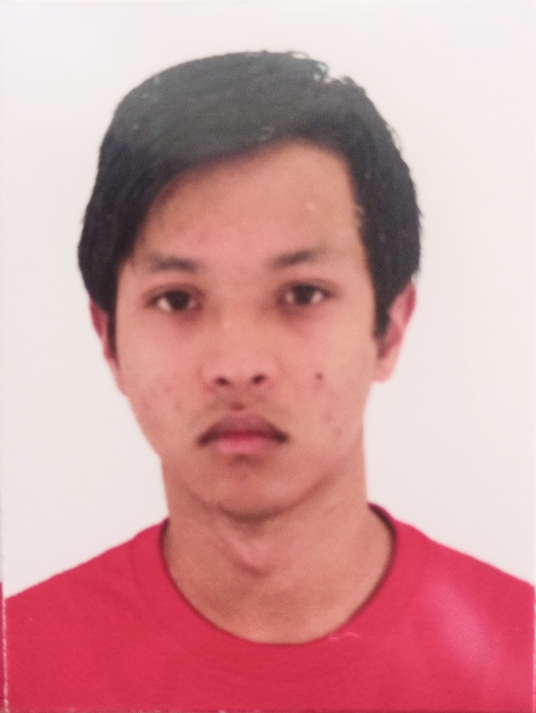

Kayky Haguiwara Oda
Rua Catharina Batista dos Santos, 106
São Manoel 2 - Salto de Pirapora - SP
Telefone: (15)998487630 E-mail: kayky.ky@hotmail.com
Idade:20 - Estado Civil: Solteiro - Naturalidade: Japão
Data de Nascimento: 26/12/2003

Busco uma vaga no mercado onde possa colocar minhas habilidades em
prática e colaborar com equipes de trabalho, tendo o conhecimento da
organização e o desenvolvimento pessoal e profissional como focos principais.
- Ensino Médio Completo;
- Cursando Analise e Desenvolvimento de Sistemas em Facens (Conclusão prevista em 2024);
| Qualificações e Atividades Complementares |
- Lingua japonesa Fluente.
- Informatica Avançado
- Ingles Basico e Avancado na escrita e leitura (2019)
- Curso Complementar Designer Gráfica em Photoshop e CorelDraw (2020).
- Curso Complementar Adobe Illustrator (2021).
- Pacote Office Básico (2021).
- Curso Complementar em Excel (2021).